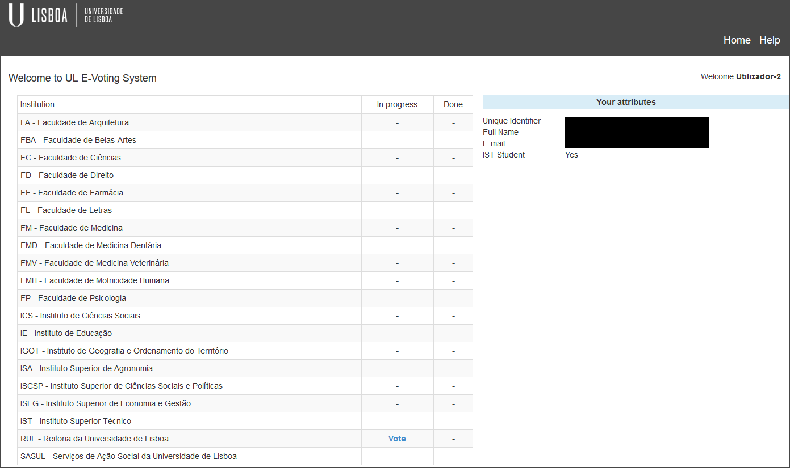
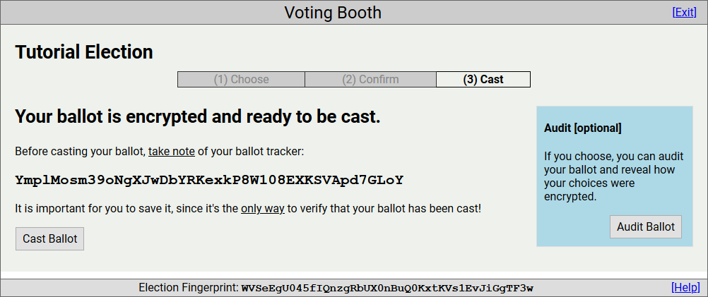
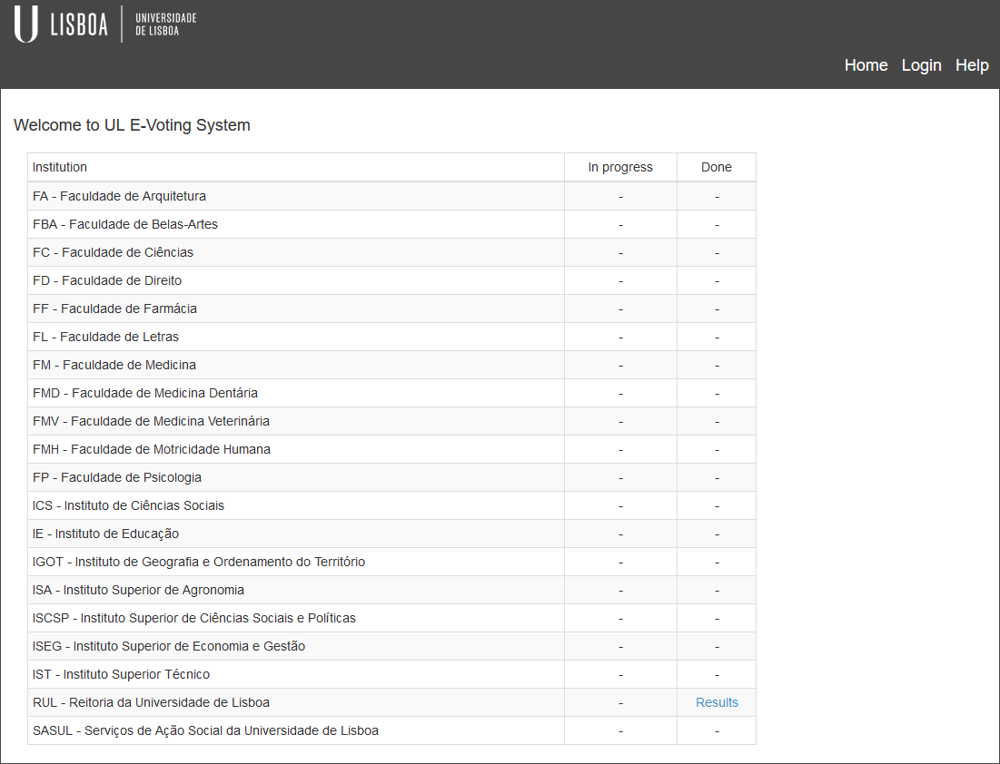
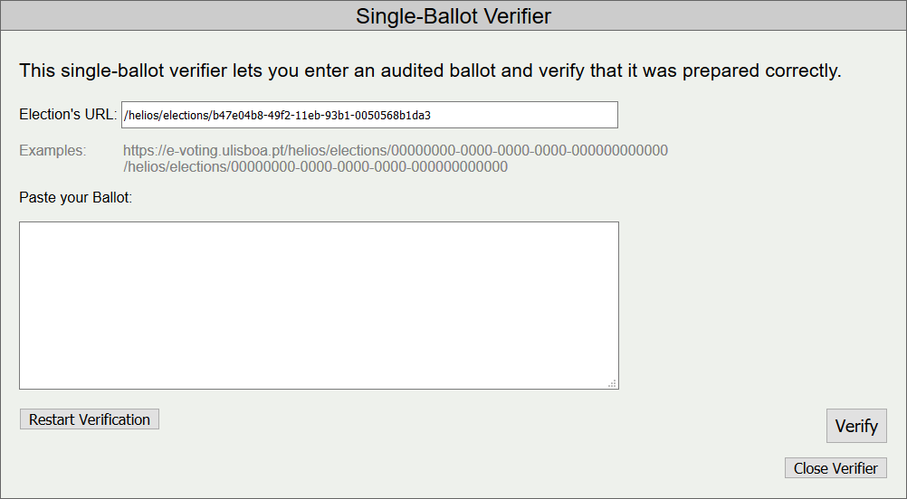

Eleitor¶
Votar¶
-
Aceda ao sistema de voto electrónico da UL.
-
Clique em Login e efetue a autenticação.
- Seleccione Vote na instituição associada à eleição.

- Seleccione a eleição pretendida.
- Clique em Vote in this Election.
- Clique em Begin.
- Após seleccionar as suas respostas preferidas, responda à próxima questão, se existir (Next Question), ou passe ao próximo passo (Next Step).
- Aqui pode verificar e alterar as suas respostas. Caso esteja tudo em ordem, prossiga para o próximo passo (Next Step).
- Se o desejar, pode tomar nota do seu rastreador de boletim (ballot tracker). Este permite identificar a contagem do seu boletim no final da eleição. Mais informações em Rastreador de Boletim.
- Também pode auditar o seu boletim (Audit Ballot) em vez de o depositar na urna, se a eleição estiver configurada para tal. Mais informações em Boletins Auditados.
- Por fim, pode depositar o boletim na urna (Cast Ballot).

- Agora terá apenas de confirmar o envio do boletim para a urna (CAST this ballot).
- O seu boletim foi corretamente registado. Lembre-se que pode votar o número de vezes que quiser, que apenas o último boletim será contabilizado.
Consultar Resultados¶
-
Aceda ao sistema de voto electrónico da UL.
-
Seleccione Results na instituição associada à eleição.

- Seleccione a eleição pretendida.
- Aqui pode consultar os resultados da eleição.
Consultar Atributos¶
Pode consultar a lista dos seus atributos na página principal, do lado direito (não se esqueça de se autenticar primeiro).
Consultar Votos¶
Pode consultar a lista de todas as eleições em que votou na página principal, do lado direito (não se esqueça de se autenticar primeiro).
Pseudónimo de Eleitor¶
Se o administrador assim o quiser, para proteger a privacidade de cada um dos eleitores, pode dar pseudónimos a estes. Caso isso aconteça, o seu pseudónimo (voter alias) aparecerá na página principal da respectiva eleição.
Código de Eleição¶
Cada eleição tem um código associado único. Este serve como identificador da eleição, e deve ser confirmado na cabine de votação para garantir que o boletim é associado à eleição pretendida. O código de uma eleição (Election Fingerprint) encontra-se na página principal desta, na secção mais abaixo.
Rastreador de Boletim¶
Cada boletim tem um rastreador (ballot tracker). É importante tomar nota do seu rastreador de boletim, de modo a que no final da eleição possa confirmar que o seu boletim foi contabilizado. Note que cada boletim tem um rastreador único, e portanto se enviar múltiplos boletins apenas o último e o seu respetivo rastreador serão contabilizados. O seu rastreador de boletim de uma eleição pode ser consultado na página principal desta, no separador mais abaixo.
Boletins Auditados¶
Nas eleições que o permitam, é possível auditar boletins (Audit Ballot).
Um boletim auditado não é contabilizado para o resultado das eleições. O propósito do boletim auditado é garantir ao eleitor que o boletim enviado para o servidor corresponde à sua intenção de voto. Para tal, é dada a opção ao eleitor de abrir o boletim e verificar o conteúdo deste. O eleitor pode fazer isto as vezes que quiser até estar satisfeito e confiante para enviar o seu boletim para a urna. Para tal, o eleitor deve:
-
Clicar em Audit Ballot.
-
Seleccionar TODA a informação do boletim de voto na caixa de texto e copiá-la.
-
Clicar em Single-Ballot Verifier - abrirá um novo separador no browser.
- Confirmar o URL da eleição, e colar a informação copiada previamente, carregando depois em Verify.

- Depois de verificar a validade do seu boletim de voto, pode fechar o separador em Close Verifier.
- Pode depois se assim o desejar, colocar o boletim de voto auditado no centro de rastreamento (Post the Audited Ballot to the Tracking Center), ficando este visível para qualquer utilizador e identificável pelo seu rastreador. Mais informações em Centro de Rastreamento.
- Não se esqueça de voltar para trás (Back to Voting) e submeter um novo boletim de voto (Cast Ballot), visto que o boletim auditado não foi contabilizado como intenção de voto.
- Ser-lhe-à dado um novo rastreador de voto, e outra vez a opção de auditar ou depositar o novo boletim na urna.
Centro de Rastreamento¶
Contém todos os votos auditados e tornados públicos pelos eleitores. Pode ser acedido na página principal de uma eleição, em Tracking Center.
Todos os votos auditados são identificados pelo seu rastreador, e qualquer utilizador os pode verificar. Para tal:
- Clique em View Content do voto a verificar - isto abrirá uma nova página.
- Copie TODA a informação e feche a página.
- Clique em Single-Ballot Verifier - isto abrirá uma nova página.
- Cole a informação do boletim de voto na caixa de texto e clique em Verify.

Verificar Contagem¶
Após o administrador da eleição ter lançado os resultados da eleição, será possível a qualquer utilizador verificar a validez desta. Para tal, clique em Verify the Election Tally.
O eleitor deverá confirmar o URL da eleição, e após isso clicar em Begin Verification.
O verificador irá:
- Carregar a eleição.
- Carregar a lista de eleitores.
- Carregar os boletins de voto de cada um dos eleitores.
- Verificar a validade de cada um dos boletins.
- Verificar a formação das chaves públicas de cada um dos trustees.
- Verificar a contagem correta dos votos.
- Informar a validade do resultado da eleição.
Exemplo de uma eleição válida:
Exemplo de uma eleição inválida:
Se votou na eleição, pode colar aqui o seu rastreador de boletim e clicar em Go para verificar que o seu boletim de voto foi contabilizado.